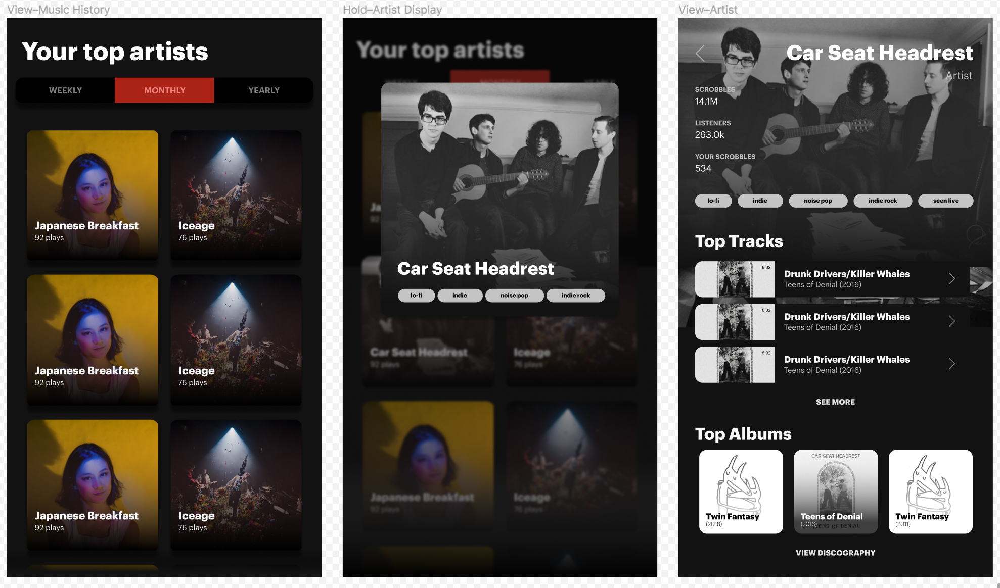
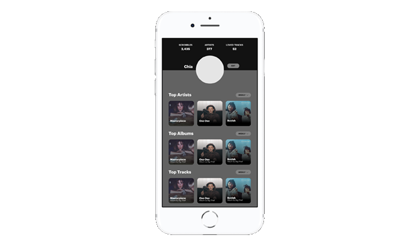
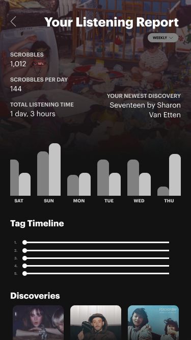

Please talk music to me and let me know your thoughts.
Last.fm is the music search & discovery network. In a time of streaming sites galore, Last.fm remains the go-to space for strong listeners to track history, fan over songs, and find people just like them. As we move more onto mobile listening, I thought of revamping the aged Last.fm application to give weight to the music we love.
Context
Learning and spreading what you love
The beauty of Last.fm is that it puts discovery together with community, while providing comprehensive listening statistics from every platform I listen to. It's essentially a music lover's dream: data-driven and social—and it seems the music community agrees
Last.fm brands itself as your "musical calling card." However, the mobile application doesn't reflect this yet.
 The current Last.fm mobile app
The current Last.fm mobile app
At present, the Last.fm mobile app shows you your music history, and has tabs dedicated to top artists, albums, and tracks that you can filter over select time periods. There's brief informational overviews for all of these, too—but the app was lacking in what the website did best: comprehensive listening reports (we want a musical calling card, after all), music recommendations and discovery, and even some of its social aspects.
Music as a center
Before working to redesign Last.fm, I had initially planned to create a concept for an all-around "recommendation" site. Like the scrobbling site, it would be built around chrome extensions and service integrations (Spotify, Goodreads, IMDB...)—I realized this would be trying to achieve too much.
Instead, I would borrow a lot of concepts from this redesign for the Last.fm mobile app.
Feature Mapping
I talked to existing Last.fm users and explored Last.fm alternatives to explore issues with the current mobile experience.
- Missing key features 👎
Users often use the mobile site to substitute with the app: stat checking, recommendations, and shoutboxes aren't accessible on the mobile app - No mobile onboarding 👎
No onboarding or syncing on mobile, only on desktop—alienating mobile-first listeners - Missing integrations 👎
Scrobbling support is only built-in for Spotify mobile and local files
It was clear that there was a suite of product features inaccessible in the application. What stood out to me was the lack of listening history, which presumably should be accessible since the current mobile app mainly gives users information on their previous scrobbles.
What does Last.fm serve when it tracks music you're playing on your phone, without letting you dive into that history? Tracking and listening history would become a priority.
As we go mobile and listen to music on-the-go: users should be able to see their listening history and its breakdowns, and then be able to participate in discussions from them.

I sketched a base flow for the redesign taking into account these features. The original mobile app only had a view for the top tracks, and then recent scrobbles. Much of my flow was based on ensuring web spaces were found on the app.
 Present Last.fm mobile application
Present Last.fm mobile application
Prioritizations
- Universality 🌎
While eyeing to add a breadth of web features on Last.fm, I kept in mind how sizable amounts of users are non-English speaking. (Many of the most popular Last.fm integrations and extensions are made by users outside of the English-speaking world!)
Keeping with minimalism and intuitive visual flows was key; I didn't want to detract from the way deeper navigation happens on the web. - Immediacy 🗂
Last.fm has fun social features and discovery, but I wanted to keep to the statistics and history that many users were prioritizing and looking for in the app. I opted to leave out some web features like neighbors and events to focus on the peg as a musical calling card. - Missing integrations 👎
Scrobbling support is only built-in for Spotify mobile and local files
Process
Building ground for sound
To begin, I built lo-fidelity mocks for the home, top listening stats and music (artist, album, track) screens.

Home Screens
 Present app home
Present app home
HOME—Previously, the app home only displayed recent scrobbles that took over the entire screen. now, a redesigned home gives the user a glimpse into their profile and music recommendations—one of the most loved features available on the web at.
 Present top music
Present top music
TOP MUSIC—Views for the user's listening history are largely the same. Instead of the dropdown, I opted to make the three history levels (weekly, monthly, and annually) more distinct.
Hold Interaction—For previewing music pages, I thought of creating a "hard hold" interaction that would showcase a modal previewing the artist page.
 Present artist page
Present artist page
ARTIST PAGE—
Music Screens
Present artist page
ARTIST PAGE—
 Present album page
Present album page
ALBUM PAGE—
 Present track page
Present track page
TRACK PAGE—The background color on the track shifts based on the originating album.
Profile
 New profile pageListening Stats
 New mobile listening stats